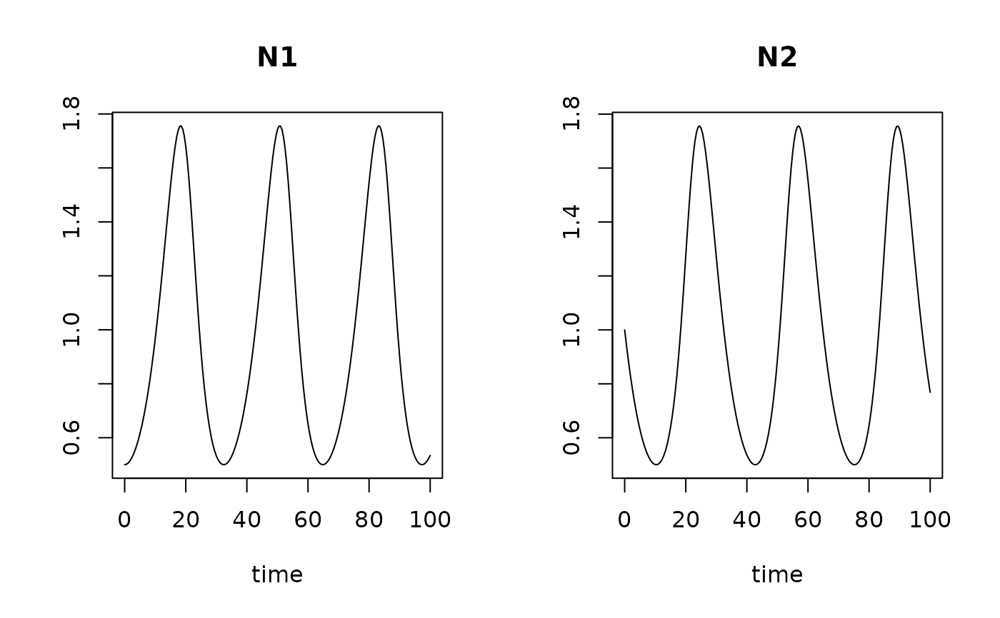

Simulation of Ecological (and Other) Dynamic Systems
simecol-package.RdAn object oriented framework to simulate ecological (and other) dynamic systems. It can be used for differential equations, individual-based (or agent-based) and other models as well. It supports structuring of simulation scenarios (to avoid copy and paste) and aims to improve readability and re-usability of code.
Details
The DESCRIPTION file:
This package was not yet installed at build time.
The simecol package is intended to give users (scientists and students) an interactive environment to implement, distribute, simulate and document ecological and other dynamic models without the need to write long simulation programs. An object oriented framework using the S4 class system provides a consistent but still flexible approach to implement simulation models of different types:
differential equation (ODE, PDE) models (class
odeModel),grid-oriented individual-based models (class
gridModel), andparticle diffusion-type models (class
rwalkModel),individual-based models (class
indbasedModel),other model types by deriving a user specified subclass from
simObj.
Each simulation model is implemented as S4 object (superclass simObj)
with the following slots:
main = function(time, init, parms, ...): a function holding the main equations of the model,equations: an optional non-nested list holding arbitrary sub-equations (sub-models) of the model. Sub-equations can be interdependent and can be called directly from withinmainorinitfunc.parms: a list (or vector for some classes) with constant model parameters,times: vector of time steps or vector with three named valuesfrom,to,byspecifying the simulation time steps. The from-to-by form can be edited witheditParms.init: initial state (start values) of the simulation. This is typically a named vector (state variables inodeModels) or matrix (e.g. initial grid ofgridModels).inputs: time dependend or spatially resolved external inputs can be specified as data frame or matrix (more efficient). Performance optimized versions ofapprox(seeapproxTime) are available.solver: a function or a character string specifying the numerical algorithm used, e.g."lsoda","rk4"or"euler"from packagedeSolve). In contrast to"euler"that can be used for difference equations (i.e.mainreturns derivatives),"iterator"is intended for models where main returns the new state (i.e for individual-based models). It is also possible to reference own algorithms (solvers) that are defined in the user workspace or to assign solver functions directly.observer: optional slot which determines the data stored during the simulation. A user-providedobserverfunction can also be used to write logging information to the screen or to the hard-disk, to perform run-time visualisation, or statistical analysis during the simulation.The
observer-mechanism works only withiterationsolvers. It is not available forodeModels.out: this slot holds the simulation results after a simulation run as data frame (if the return value ofmainis a vector) or as list (otherwise). The type of data stored inoutcan be manipulated by providing a user-defindedobserverfunction.initfunc: this slot can hold an optional function which is called automatically when a new object is created bynewor when it is re-initialized byinitializeorsim.
simObj model objects should be defined and created using the
common S4 mechanisms (new).
Normally, a simObj object can contain all data needed to run
simulations simply by entering the model object via source() or
data() and then to run and plot the model with
plot(sim(obj)).
Accessor functions (with names identical to the slot names) are
provided to get or set model parameters, time steps, initial values,
inputs, the solver, the main and sub-equations, an observer or an
initfunc and to extract the model outputs. It is also possible to
modify the components of the simecol objects directly, e.g. the model
equations of a model lv with lv@main, but this is
normally not recommended as there is no guarantee that this will work in a
compatible way in future versions.
Models of different type are provided as data and some more in source code (see directory examples).
The examples can be used as a starting point to write own
simObj objects and to distribute them to whomever you wish.
The package is supplemented with several utility functions
(e.g. seedfill or neighbours), which can
be used independently from simObj objects.
References
Petzoldt, T. and K. Rinke (2007) simecol: An Object-Oriented Framework for Ecological Modeling in R. Journal of Statistical Software, 22(9). doi:10.18637/jss.v022.i09
Examples
## (1) Quick Start Examples ====================================================
data(lv) # load basic Lotka-Volterra model
if (FALSE) { # \dontrun{
require("tcltk")
lv <- editParms(lv)
} # }
parms(lv)
#> k1 k2 k3
#> 0.2 0.2 0.2
main(lv)
#> function (time, init, parms)
#> {
#> x <- init
#> p <- parms
#> dx1 <- p["k1"] * x[1] - p["k2"] * x[1] * x[2]
#> dx2 <- -p["k3"] * x[2] + p["k2"] * x[1] * x[2]
#> list(c(dx1, dx2))
#> }
#> attr(,"source")
#> [1] "function (time, init, parms) {"
#> [2] " x <- init"
#> [3] " p <- parms"
#> [4] " dx1 <- p[\"k1\"] * x[1] - p[\"k2\"] * x[1] * x[2]"
#> [5] " dx2 <- - p[\"k3\"] * x[2] + p[\"k2\"] * x[1] * x[2]"
#> [6] " list(c(dx1, dx2))"
#> [7] " }"
lv <- sim(lv)
plot(lv)
 results <- out(lv)
if (FALSE) { # \dontrun{
data(conway) # Conway's game of life
init(conway) <- matrix(0, 10, 10)
times(conway) <- 1:100
conway <- editInit(conway) # enter some "1"
sim(conway, animate=TRUE, delay=100)
} # }
## (2) Define and run your own simecol model ==========================
lv <- new("odeModel",
main = function (time, init, parms) {
with(as.list(c(init, parms)), {
dn1 <- k1 * N1 - k2 * N1 * N2
dn2 <- - k3 * N2 + k2 * N1 * N2
list(c(dn1, dn2))
})
},
parms = c(k1 = 0.2, k2 = 0.2, k3 = 0.2),
times = c(from = 0, to = 100, by = 0.5),
init = c(N1 = 0.5, N2 = 1),
solver = "lsoda"
)
lv <- sim(lv)
plot(lv)
results <- out(lv)
if (FALSE) { # \dontrun{
data(conway) # Conway's game of life
init(conway) <- matrix(0, 10, 10)
times(conway) <- 1:100
conway <- editInit(conway) # enter some "1"
sim(conway, animate=TRUE, delay=100)
} # }
## (2) Define and run your own simecol model ==========================
lv <- new("odeModel",
main = function (time, init, parms) {
with(as.list(c(init, parms)), {
dn1 <- k1 * N1 - k2 * N1 * N2
dn2 <- - k3 * N2 + k2 * N1 * N2
list(c(dn1, dn2))
})
},
parms = c(k1 = 0.2, k2 = 0.2, k3 = 0.2),
times = c(from = 0, to = 100, by = 0.5),
init = c(N1 = 0.5, N2 = 1),
solver = "lsoda"
)
lv <- sim(lv)
plot(lv)

## (3) The same in matrix notation; this allows generalization ====
## to multi-species interaction models with > 2 species. ====
LVPP <- new("odeModel",
main = function(t, n, parms) {
with(parms, {
dn <- r * n + n * (A %*% n)
list(c(dn))
})
},
parms = list(
# growth/death rates
r = c(k1 = 0.2, k3 = -0.2),
# interaction matrix
A = matrix(c(0.0, -0.2,
0.2, 0.0),
nrow = 2, ncol = 2, byrow=TRUE)
),
times = c(from = 0, to = 100, by = 0.5),
init = c(N1 = 0.5, N2 = 1),
solver = "lsoda"
)
plot(sim(LVPP))